Explore Santiago
A Brief History
Santiago was refounded by Pedro de Valdivia in 1541 in a valley beneath the Andes, serving as capital of the Captaincy General and later the Republic of Chile. Earthquakes repeatedly reshaped its colonial churches and neoclassical centre before 19th-century nitrate wealth funded boulevards and public buildings. Plaza de Armas, Cerro San Cristóbal, and the Bellavista quarter show how the city became Chile's political, financial, and cultural hub.
Attractions Map
Top Sights & Activities
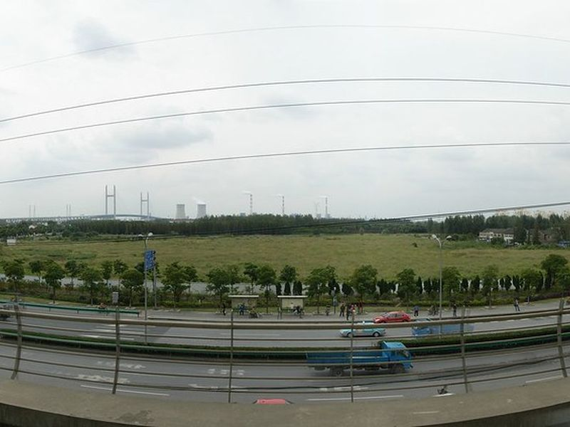
National Aerospace Museum
The National Aerospace Museum in Santiago, Chile, is a must-visit destination for anyone intrigued by the wonders of flight and space exploration. This captivating museum showcases an impressive array of aircraft, from rare antique planes like the WW1 SE-5A to WWII models such as the P-47 Thunderbolt and F-86 Sabre. Visitors can explore various educational exhibits that delve into aviation history while also enjoying dedicated spaces for children.
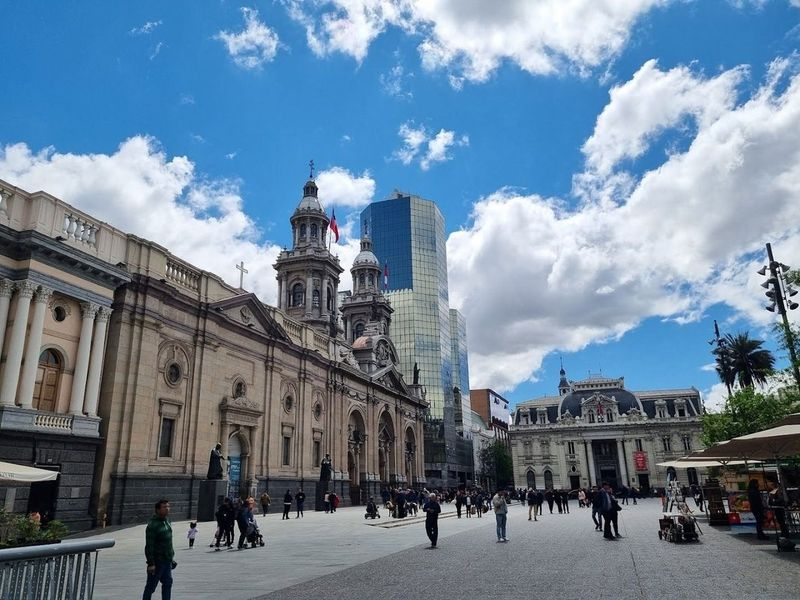
Plaza de Armas de Santiago
Plaza de Armas de Santiago is a central urban square that features an array of statues and is surrounded by impressive buildings. It holds historical significance as the place where Chile's first colonizers resided. Today, it is a popular spot for tourists to capture photos of the grand Metropolitan Cathedral and visit the National History Museum, which houses relics and paintings from the past. The area has evolved into an immigrant hub but remains a destination in Santiago.
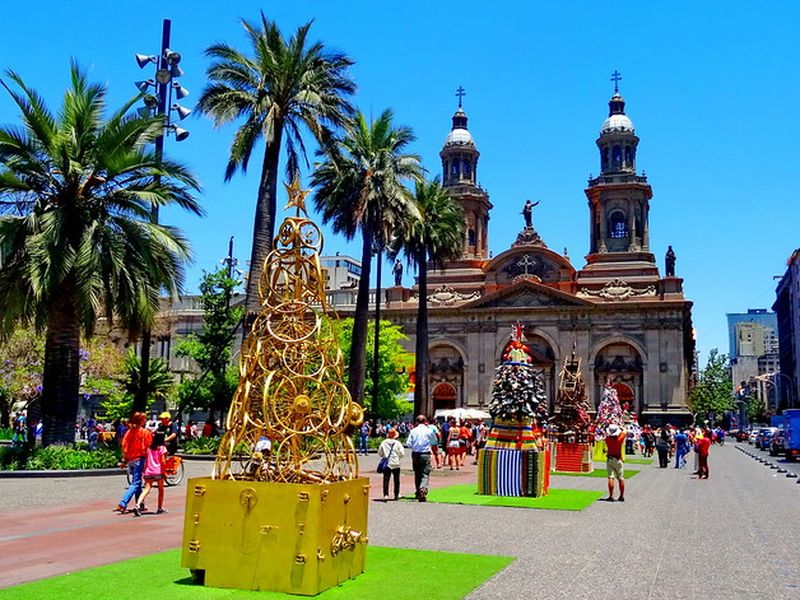
Metropolitan Cathedral of Santiago
The Metropolitan Cathedral of Santiago, completed in 1800, is a grand neoclassical structure that serves as the seat of the city's archbishop. Flanked by Plaza de Armas, it has a rich history dating back to 1541 when Pedro de Valdivia requested its construction. Over the centuries, it underwent several reconstructions due to fires and earthquakes.
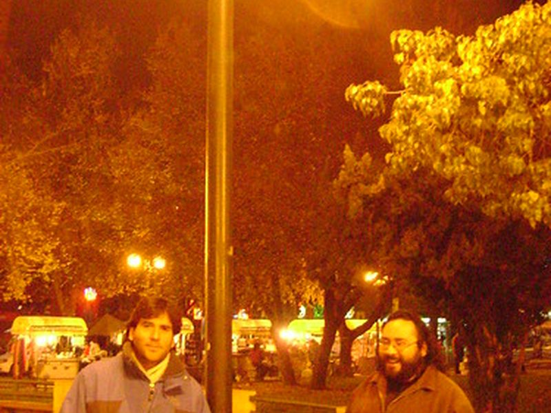
Plaza Ñuñoa
Plaza Ñuñoa is a vibrant parklike square surrounded by popular open-air restaurants, bars, and shops. It's a relatively new area for nightlife, offering a more laid-back atmosphere compared to other nearby spots. The plaza features leafy esplanades, fountains, and even a playground for children during the day. Visitors can enjoy various events with local vendors serving up their wares and delicious cuisine from food trucks on weekends.
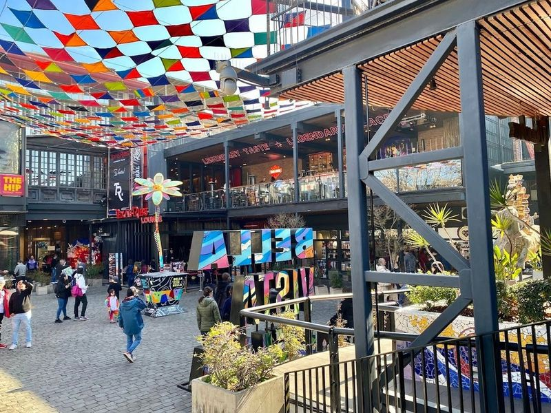
Patio Bellavista
Patio Bellavista is a lively shopping center located in the artistic neighborhood of Bellavista, Santiago. It features a variety of unique shops offering high-quality arts and crafts, jewelry, woolens, woodwork, and clothing. The beautifully designed space is centered around a cobblestone patio with charming cafes and outstanding restaurants where visitors can enjoy al fresco dining.
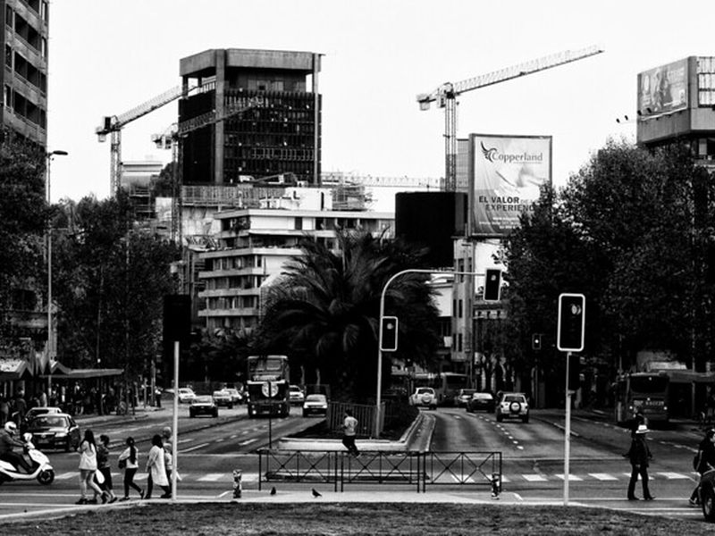
Plaza Baquedano
Plaza Baquedano, established in 1875, serves as a central gathering spot for both festivities and protests. It is surrounded by parks and a university, making it a popular area for leisurely strolls. Despite heavy traffic from the university and other nearby attractions, the plaza remains relatively clean. The historical significance of the location is evident through its numerous monuments and statues, reflecting its role in significant events.
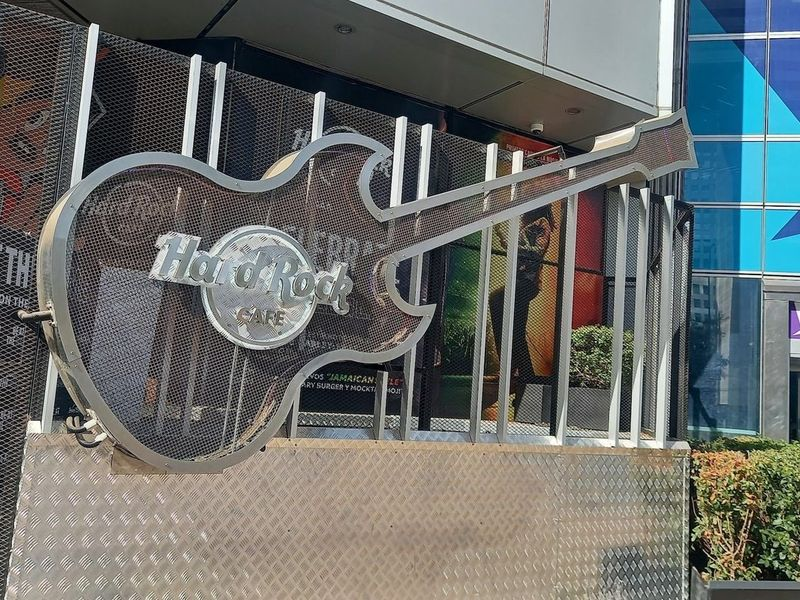
Cenco Costanera Mall Shopping
Cenco Costanera is a remarkable complex in Santiago, Chile, featuring the Gran Torre, which is the tallest skyscraper in Latin America. The complex includes hotels and a 6-story mall. Visitors can enjoy views of Santiago from above and learn about the tower's construction from knowledgeable guides. The top floor offers panoramic 360-degree views of the city, with the option to relax at a cafe/bar.
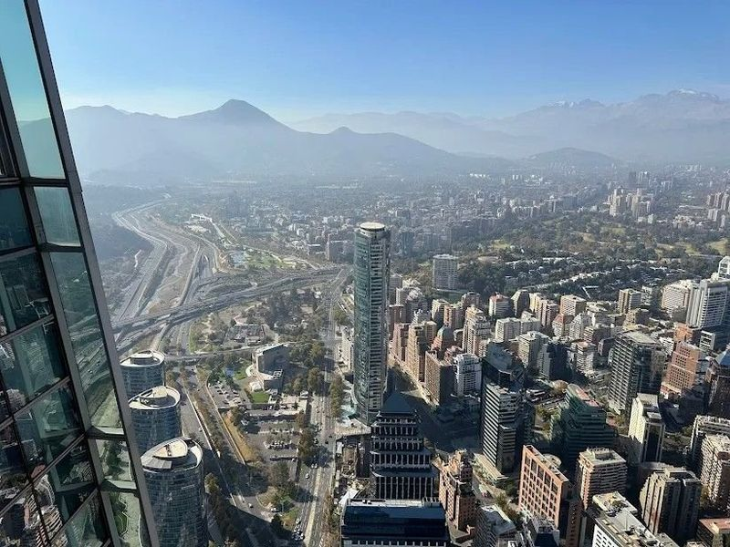
Sky Costanera
Sky Costanera is a must-visit glass-walled observation deck located 300 meters high in the Gran Torre Santiago, the tallest building in Latin America. From this spot, visitors can enjoy 360o panoramas of Santiago and its surroundings, including views of the Andes mountains. The observation deck offers an unparalleled vantage point to admire the city's modern buildings, urban parks, and landmarks like Cerro San Cristobal and Cerro Santa Lucia.
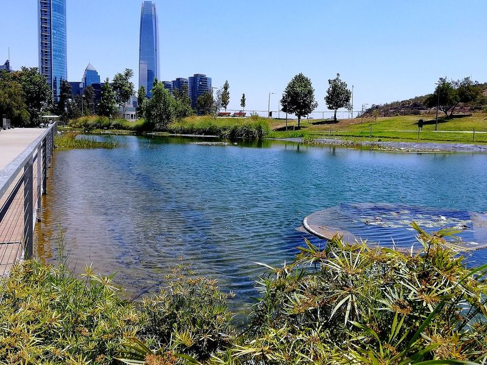
Parque Bicentenario
Parque Bicentenario is a sprawling urban green space located in the upscale district of Vitacura, Santiago. Opened in 2007 to commemorate Chile's bicentennial, this meticulously maintained park offers pristine walking paths, lush green areas, and a man-made lagoon with picturesque boardwalks along the Mapocho River. It also features a dog agility course, sports fields, picnic spots, and a playground for families to enjoy.
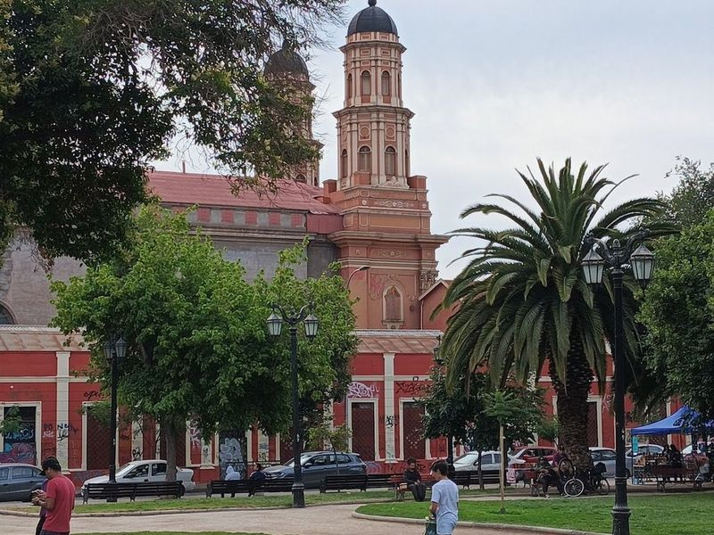
Plaza Brasil
Plaza Brasil is a serene park with play areas for kids, including swings and climbing toys. It's located in Barrio Yungay and Barrio Brasil, known for abundant street art. Starting at Plaza Brasil is a great way to explore the area's vibrant culture. While it's a lovely place during the day, caution is advised at night due to potential pickpocketing. The plaza offers handcrafts and access to charming restaurants nearby.
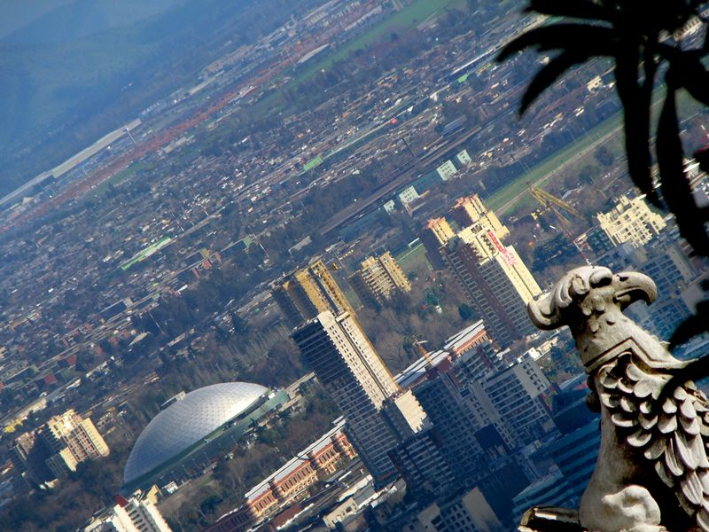
Movistar Arena
Located in the OHiggins Park, the Movistar Arena is a massive venue that can accommodate up to 15,000 people. It hosts major international acts and events like Lollapalooza Chile. The arena offers excellent transport links and modern facilities for concerts and sporting events. Visitors praise its cleanliness, respectful audience, and first-class hospitality.
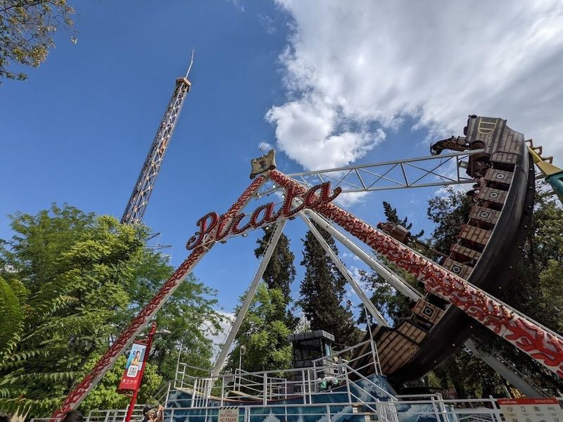
Fantasilandia
Fantasilandia is a popular amusement park located in the heart of Santiago, Chile. Established in 1978, it has become one of the top tourist attractions in the country. The park offers a wide variety of attractions including high-adrenaline roller coasters, family rides, and activities for kids and youngsters. With over forty exhilarating attractions to choose from, Fantasilandia provides entertainment for visitors of all ages.
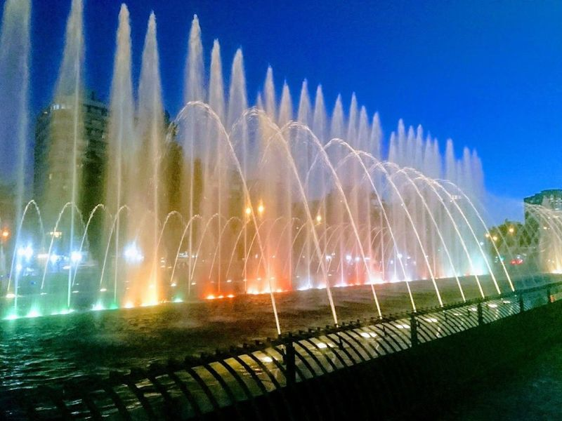
Plaza La Aviación
The Santiago Library is an excellent facility for studying and reading, offering various spaces tailored to different age groups such as children and seniors. It provides a pleasant atmosphere and the staff members are very friendly. Notably, it is the only library open on Sundays until 5:00 p.m. The library is conveniently located near Quinta Normal metro station and accessible via various bus lines.
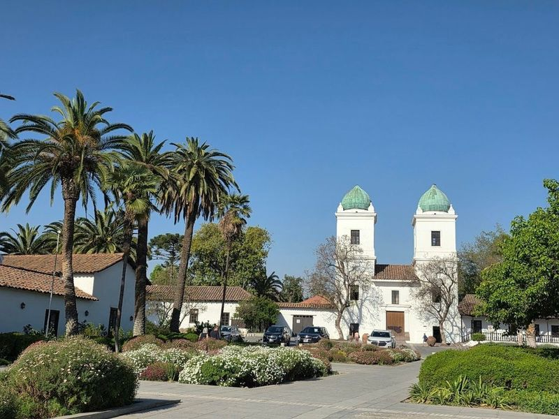
Los Dominicos Craft Centre
Los Dominicos Craft Centre, also known as Pueblito Los Dominicos, is a charming artisan market located in Las Condes. The setting resembles a traditional Chilean village with adobe buildings and offers a wide range of artisan crafts and goods. Visitors can explore nearly 200 stalls selling handmade jewelry, sculpture, paintings, clothes, leather work, wood crafts, woolen items, jewelry and medicinal herbs.
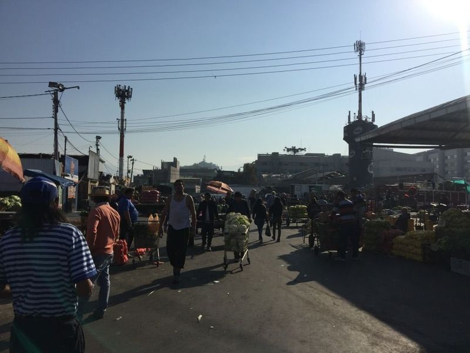
Vega Central de Santiago
Vega Central de Santiago is a bustling and lively market that offers a wide variety of goods, including fruits, vegetables, seafood, meat, and hot snacks. It is a favorite spot for travelers due to its diverse offerings and affordable prices. Visitors can enjoy traditional Chilean dishes like fried fish, pastel de choclo, prietas, cazuela, and porotos granados at budget-friendly prices.
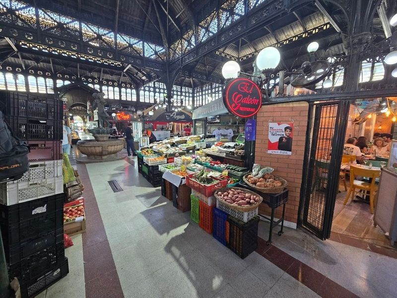
Santiago Central Market
Santiago Central Market, also known as Mercado Central, is a vibrant 1800s market that offers an authentic glimpse into the culinary traditions of Santiago. This historic building boasts a unique architectural design with imported wrought iron from England, creating a colorful and lively atmosphere filled with natural light.
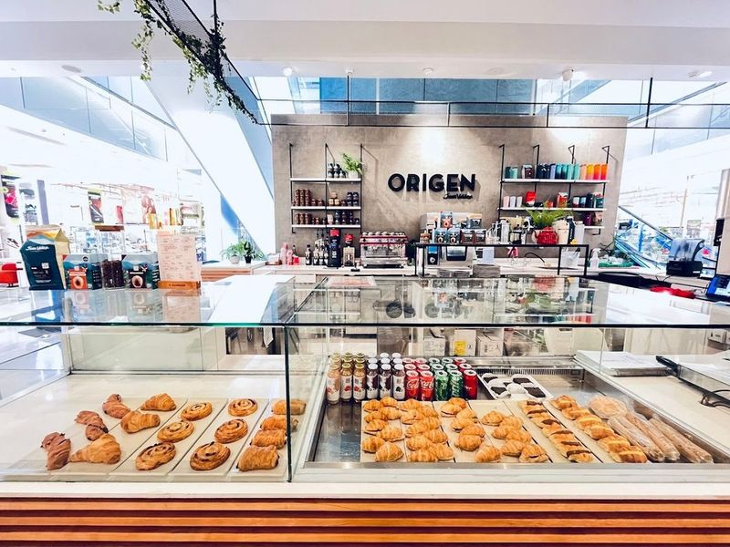
Mall Parque Arauco
Parque Arauco, situated in the upscale Las Condes district of Santiago, offers a luxurious shopping experience with an array of high-end global brands and department stores. The mall is a hotspot for exclusive fashion, featuring renowned names like Gucci, Louis Vuitton, Dolce & Gabbana, and Ermenegildo Zegna. Additionally, visitors can explore the 'Luxury District' within the mall that showcases the latest international trends from luxury brands.
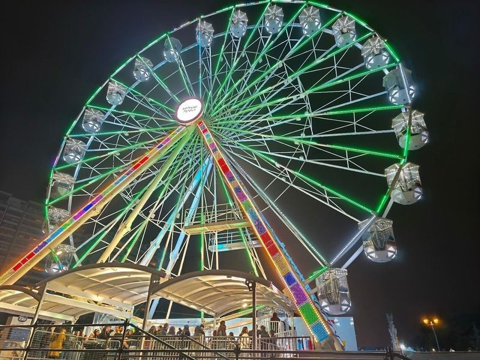
Araucano Park
Araucano Park, located in the Las Condes area, is a vast and picturesque public park surrounded by modern high-rises. Established as part of an urban renewal project in the sixties, it offers a serene escape with its rose gardens, playgrounds, basketball and tennis courts, skate park, and ample green spaces. The park hosts top-class concerts and cultural events and is adjacent to the luxurious Parque Arauco Mall.
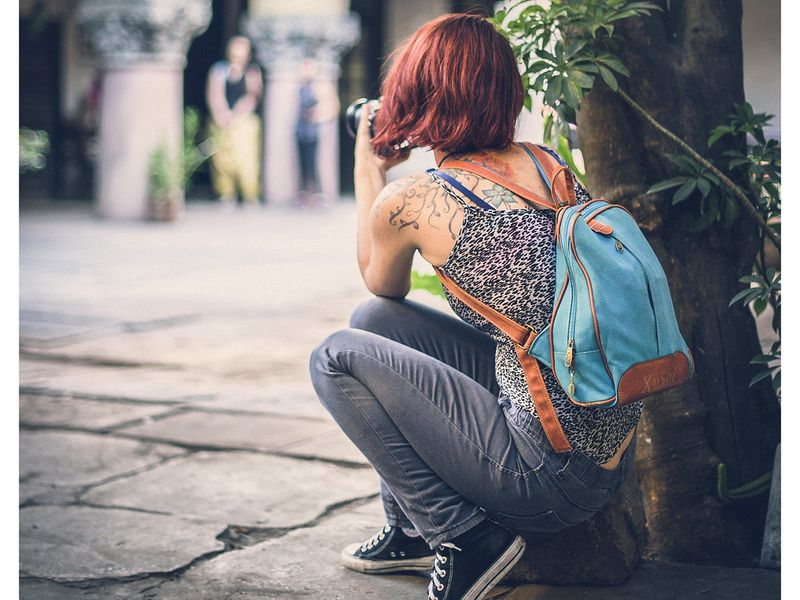
Casa de los Diez
Nestled in the heart of Santiago de Chile, Casa de los Diez is a neocolonial building that dates back to the late 1800s. Originally serving as a hub for an artists' collective known as the Group of the Ten, this architectural gem has transformed into a vibrant venue for cultural events and fairs. Declared a national monument in 1997, its charm lies not only in its historical significance but also in its captivating atmosphere.
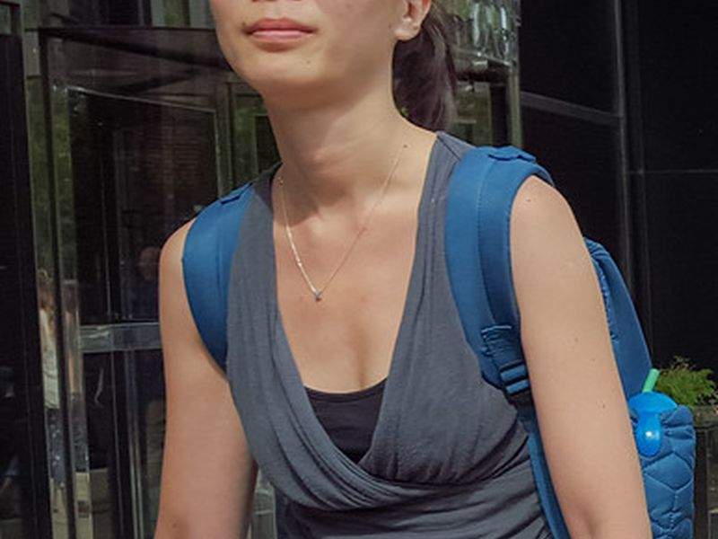
Constitution Place
Constitution Place, also known as Plaza de la Constitucion, is a significant square in the civic district of Santiago. It features military parades and civic monuments and is located in front of La Moneda. The plaza is surrounded by government buildings and offers a large grass area where people gather during lunchtime. This historical site was the starting point of a coup many years ago, with some statues bearing bullet holes as evidence.
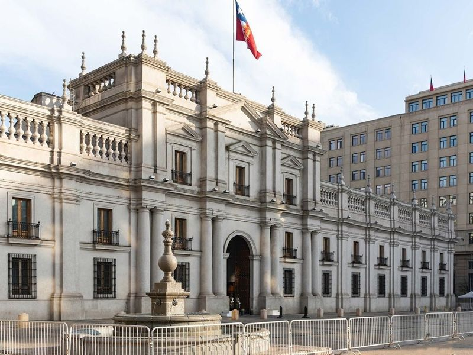
La Moneda Palace
La Moneda Palace, also known as Palacio de la Moneda, is an elegant building in the heart of Downtown Santiago. Originally constructed as the Royal Mint between 1784 and 1805, it was later repurposed as the presidential palace. Designed by Italian architect Joaquin Toesca, this Neoclassical structure holds historical significance as the official seat of government for Chilean presidents. Visitors can explore its grand architecture and learn about its rich heritage through guided tours.
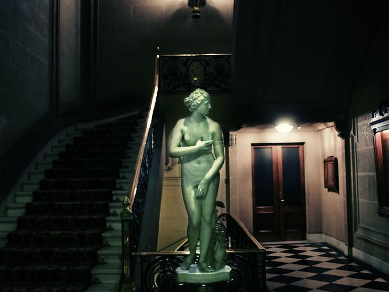
Club de la Unión de Santiago
Established in 1864, Club de la Unión de Santiago was originally a meeting place for aristocrats and has since become a historic and elegant space filled with art. Initially exclusive to male members, it only began admitting women in 2006. The club offers delicious homemade dishes and is known for its good mojitos and pleasant atmosphere. With beautiful tapestries, statues, and excellent service, the club is housed in a period building that's perfect for parties or special events.
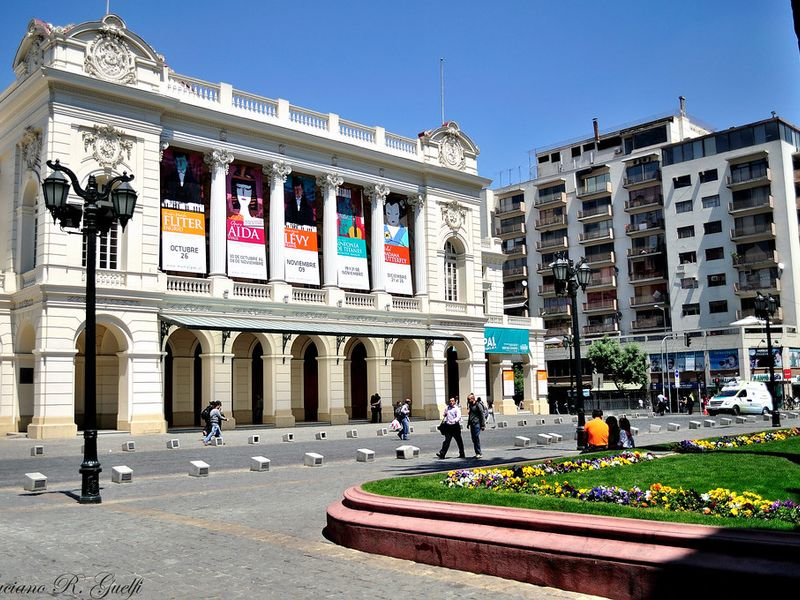
Municipal Theatre of Santiago
The Municipal Theatre of Santiago, a neoclassical arts complex established in 1857, is home to various permanent artistic ensembles including the Santiago Philharmonic Orchestra, the Santiago Ballet, and the Municipal Choir of Santiago. It also offers artistic training programs such as the Ballet School and the Ibanez Atkinson Young Artist Program.
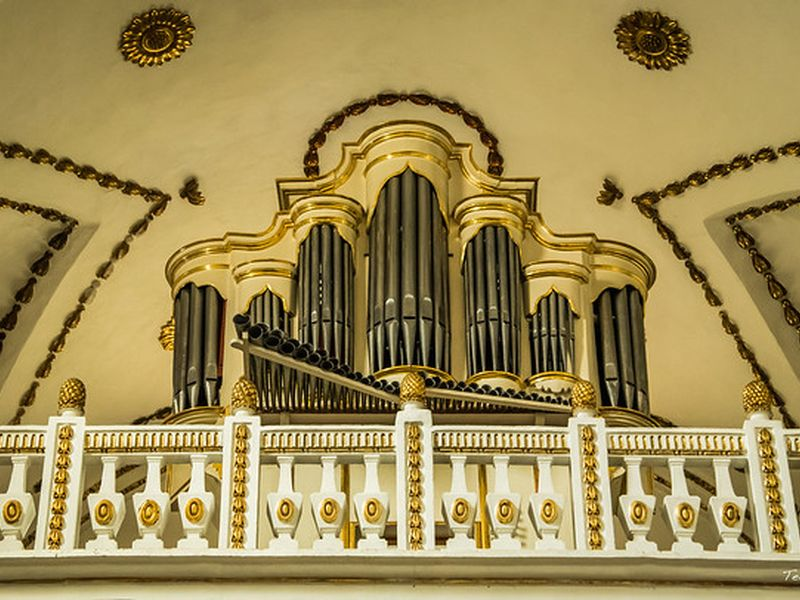
Church of San Francisco
Nestled in the heart of Chile, the Church of San Francisco is a remarkable testament to the country's colonial history and architectural heritage. Believed to be the oldest existing structure in Chile, this church boasts a neoclassical clock tower that adds to its charm. Originally established as a hermitage for the Virgen del Socorro in 1541, it transitioned into Franciscan hands by 1544, leading to its construction beginning in 1575.
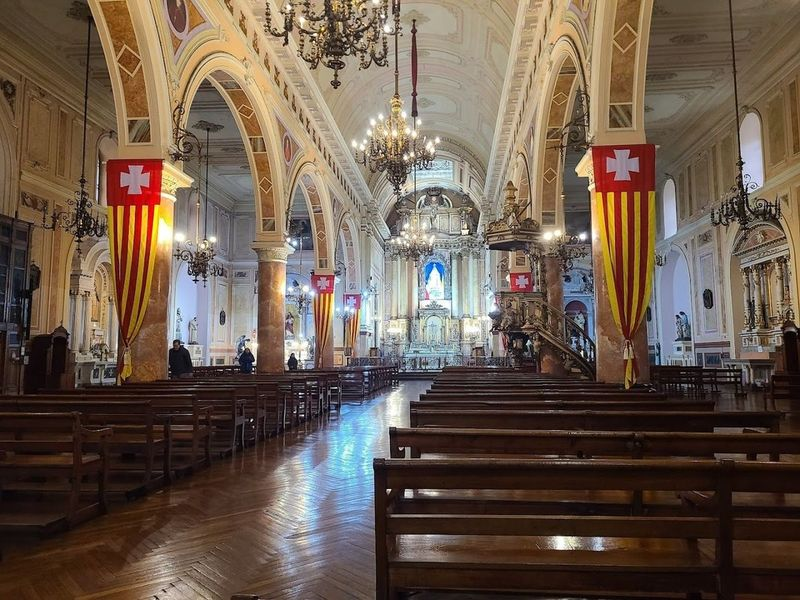
Basilica de la Merced
The Basilica de la Merced, located at the corner of Merced and Enrique Mac Iver streets in Santiago, is a prominent religious site with a rich history. Originally constructed in 1566 using adobe materials, the church has undergone several reconstructions over the centuries. The most recent remodeling was done by Italian architect Joaquin Toesca in 1799.
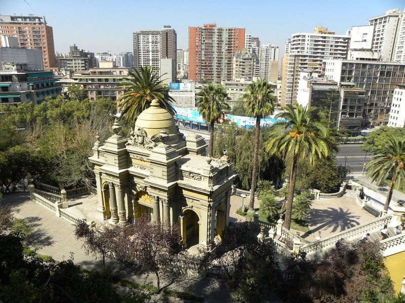
Santa Lucía Hill
Santa Lucía Hill, a small urban hill in the heart of Santiago, Chile, holds great historical and cultural significance as it was the site where Pedro de Valdivia founded the city in the mid-sixteenth century. The picturesque park on the hill features terraces, fountains, and a summit viewpoint offering magnificent panoramic views of Santiago. With charming hidden corners like the Neptune Fountain and Hidalgo Castle, this area is a must-visit for its beauty and historical importance.
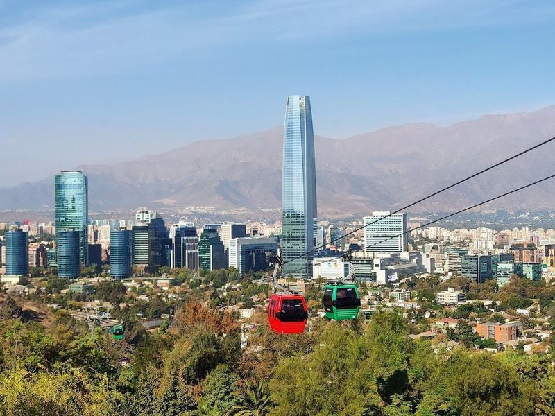
Santiago Metropolitan Park
Parque Metropolitano de Santiago is a sprawling urban park that offers a variety of attractions and activities. It features cable cars, a zoo, lush forests, expansive green spaces, historic statues, and refreshing pools. This park is an ideal destination for spending leisure time with friends or family without breaking the bank. Visitors can enjoy leisurely strolls through its winding paths adorned with picturesque water ponds and verdant trees.
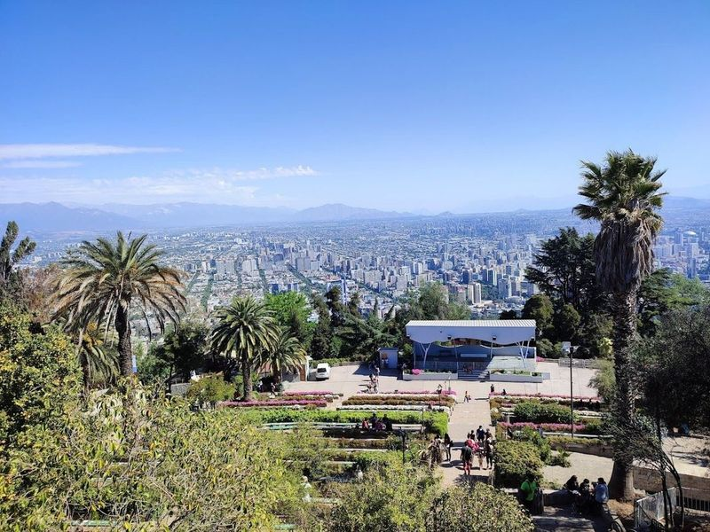
San Cristóbal Hill
San Cristóbal Hill, a must-visit landmark in Santiago, offers an experience for both tourists and locals. This impressive hill rises majestically from the Bellavista neighborhood, providing panoramic views of the city and its surroundings. choose to hike up or take the funicular train for a more leisurely ascent.
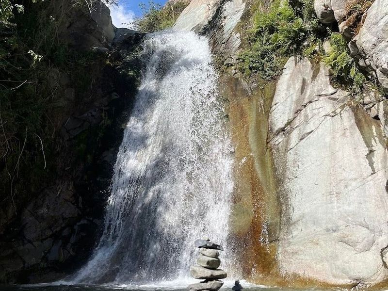
Parque Natural Quebrada de Macul
Parque Natural Quebrada de Macul is a popular spot in Santiago for outdoor activities like hiking, mountain biking, and horseback riding. The park offers a variety of trails suitable for different skill levels, from easy family walks to more demanding hikes up Cerro la Cruz and San Ramon. The area features a unique sclerophyllous forest, typical of Chile's central zone.
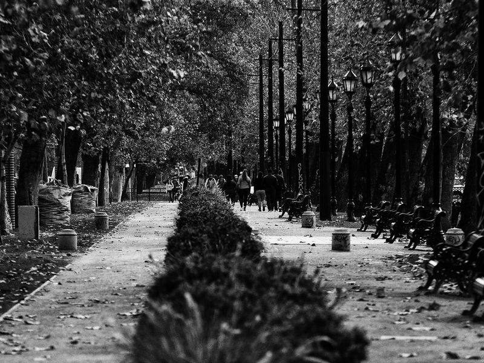
Parque Forestal
Parque Forestal is a historic park in Santiago, Chile, dating back to 1905. It boasts sculptures and a winding path that passes by museums and attractions. The park offers lush trees, wide green spaces, and pleasant paths for leisurely walks with splendid views. Visitors can relax by charming ponds or explore the nearby Lastarria neighborhood known for its art house cinemas, galleries, bars, and restaurants.
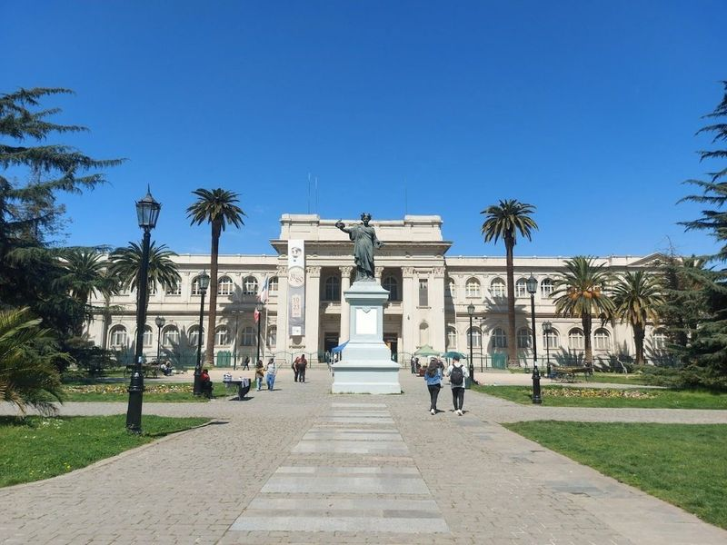
Parque Quinta Normal
Parque Quinta Normal is a renowned urban park in Santiago, established in 1841 and managed by the Municipality of Santiago. It's celebrated for its lush greenery, offering various recreational activities such as paddle boating, go-karting, and playing with traditional wind-up toys sold by local vendors. The park also features cultural attractions including significant museums. Visitors can unwind amidst leafy trees, fountains, and ponds while exploring the extensive paths within the park.